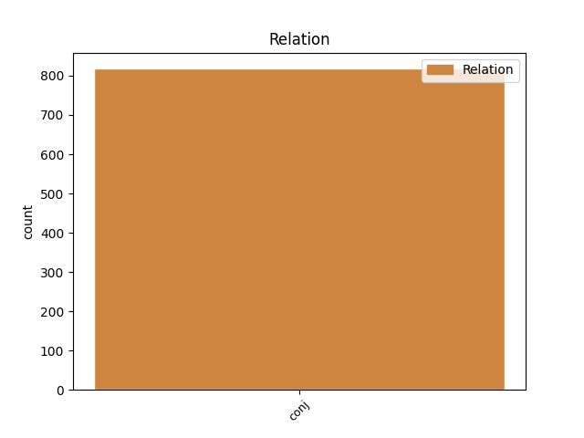
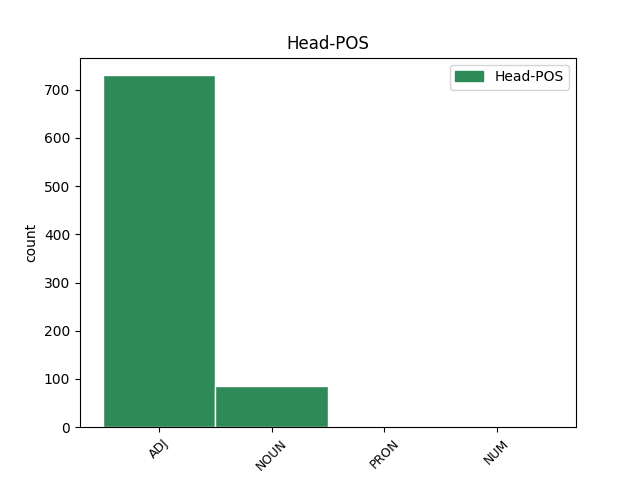
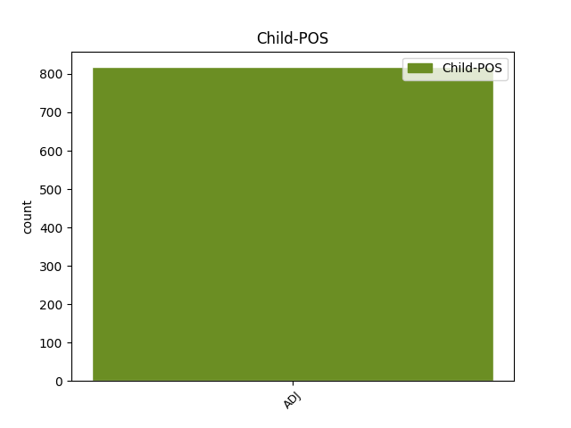

Distribution of features within this leaf



Agreement Rules sorted by frequency.
- When the dependent token is the conjunct(conj) of the head token, and the head token is ADJ and the dependent token is ADJ.
1 و _ _ _ _ 0 _ _ _
2 أشار _ _ _ _ 0 _ _ _
3 العيار _ _ _ _ 0 _ _ _
4 الى _ _ _ _ 0 _ _ _
5 استمرار _ _ _ _ 0 _ _ _
6 المساعدات _ _ _ _ 0 _ _ _
7 و _ _ _ _ 0 _ _ _
8 في _ _ _ _ 0 _ _ _
9 جميع _ _ _ _ 0 _ _ _
10 المجالات _ _ _ _ 0 _ _ _
11 الغذائية _ _ _ _ 0 _ _ _
12 و _ _ _ _ 0 _ _ _
13 الدوائية دَوَائِيّ ADJ A-----FS2D Case=Gen|Definite=Def|Gender=Fem|Number=Sing 0 _ _ _
14 و _ _ _ _ 0 _ _ _
15 الصحية صِحِّيّ ADJ A-----FS2D Case=Gen|Definite=Def|Gender=Fem|Number=Sing 13 conj _ Gloss=health,healthy,sanitary|LTranslit=ṣiḥḥīy|Root=.s_.h_.h|Translit=aṣ-ṣiḥḥīyati|Vform=اَلصِّحِّيَّةِ
16 و _ _ _ _ 0 _ _ _
17 غير _ _ _ _ 0 _ _ _
18 ها _ _ _ _ 0 _ _ _
19 موضحا _ _ _ _ 0 _ _ _
20 أن _ _ _ _ 0 _ _ _
21 ما _ _ _ _ 0 _ _ _
22 يتعلق _ _ _ _ 0 _ _ _
23 ب _ _ _ _ 0 _ _ _
24 وزارة _ _ _ _ 0 _ _ _
25 الكهرباء _ _ _ _ 0 _ _ _
26 و _ _ _ _ 0 _ _ _
27 الماء _ _ _ _ 0 _ _ _
28 ف _ _ _ _ 0 _ _ _
29 إن _ _ _ _ 0 _ _ _
30 ها _ _ _ _ 0 _ _ _
31 لا _ _ _ _ 0 _ _ _
32 تزال _ _ _ _ 0 _ _ _
33 تقدم _ _ _ _ 0 _ _ _
34 المياه _ _ _ _ 0 _ _ _
35 العذبة _ _ _ _ 0 _ _ _
36 الى _ _ _ _ 0 _ _ _
37 العراق _ _ _ _ 0 _ _ _
38 " _ _ _ _ 0 _ _ _
39 ف _ _ _ _ 0 _ _ _
40 هناك _ _ _ _ 0 _ _ _
41 أنبوب _ _ _ _ 0 _ _ _
42 يصب _ _ _ _ 0 _ _ _
43 يوميا _ _ _ _ 0 _ _ _
44 في _ _ _ _ 0 _ _ _
45 العراق _ _ _ _ 0 _ _ _
46 ب _ _ _ _ 0 _ _ _
47 طاقة _ _ _ _ 0 _ _ _
48 مليون _ _ _ _ 0 _ _ _
49 و _ _ _ _ 0 _ _ _
50 نصف _ _ _ _ 0 _ _ _
51 المليون _ _ _ _ 0 _ _ _
52 جالون _ _ _ _ 0 _ _ _
53 " _ _ _ _ 0 _ _ _
54 . _ _ _ _ 0 _ _ _
1 وصلت _ _ _ _ 0 _ _ _
2 الى _ _ _ _ 0 _ _ _
3 الرياض _ _ _ _ 0 _ _ _
4 مساء _ _ _ _ 0 _ _ _
5 اليوم _ _ _ _ 0 _ _ _
6 طائرة _ _ _ _ 0 _ _ _
7 الاخلاء _ _ _ _ 0 _ _ _
8 الطبى _ _ _ _ 0 _ _ _
9 السعودية _ _ _ _ 0 _ _ _
10 قادمة _ _ _ _ 0 _ _ _
11 من _ _ _ _ 0 _ _ _
12 العاصمة _ _ _ _ 0 _ _ _
13 العراقية _ _ _ _ 0 _ _ _
14 بغداد _ _ _ _ 0 _ _ _
15 و _ _ _ _ 0 _ _ _
16 على _ _ _ _ 0 _ _ _
17 متن _ _ _ _ 0 _ _ _
18 ها _ _ _ _ 0 _ _ _
19 7 _ _ _ _ 0 _ _ _
20 مرضى مَرِيض NOUN N------P2I Case=Gen|Definite=Ind|Number=Plur 0 _ _ _
21 و _ _ _ _ 0 _ _ _
22 مصابين مُصَاب ADJ A-----MP2I Case=Gen|Definite=Ind|Gender=Masc|Number=Plur 20 conj _ Gloss=afflicted,injured,wounded|LTranslit=muṣāb|Root=.s_w_b|Translit=muṣābīna|Vform=مُصَابِينَ
23 و _ _ _ _ 0 _ _ _
24 مرافقي _ _ _ _ 0 _ _ _
25 هم _ _ _ _ 0 _ _ _
26 من _ _ _ _ 0 _ _ _
27 ابناء _ _ _ _ 0 _ _ _
28 أسرة _ _ _ _ 0 _ _ _
29 هم _ _ _ _ 0 _ _ _
30 . _ _ _ _ 0 _ _ _
1 و _ _ _ _ 0 _ _ _
2 قال _ _ _ _ 0 _ _ _
3 العلماء _ _ _ _ 0 _ _ _
4 ان _ _ _ _ 0 _ _ _
5 الجثتين _ _ _ _ 0 _ _ _
6 المحفوظتين _ _ _ _ 0 _ _ _
7 فى _ _ _ _ 0 _ _ _
8 متحف _ _ _ _ 0 _ _ _
9 مدينة _ _ _ _ 0 _ _ _
10 ليويشون _ _ _ _ 0 _ _ _
11 ب _ _ _ _ 0 _ _ _
12 مقاطعة _ _ _ _ 0 _ _ _
13 لياونينغ _ _ _ _ 0 _ _ _
14 / _ _ _ _ 0 _ _ _
15 شمال _ _ _ _ 0 _ _ _
16 شرق _ _ _ _ 0 _ _ _
17 الصين _ _ _ _ 0 _ _ _
18 / _ _ _ _ 0 _ _ _
19 قد _ _ _ _ 0 _ _ _
20 استخرجتا _ _ _ _ 0 _ _ _
21 من _ _ _ _ 0 _ _ _
22 مدينة _ _ _ _ 0 _ _ _
23 توربان _ _ _ _ 0 _ _ _
24 ب _ _ _ _ 0 _ _ _
25 منطقة _ _ _ _ 0 _ _ _
26 شينجيانغ _ _ _ _ 0 _ _ _
27 الذاتية _ _ _ _ 0 _ _ _
28 الحكم _ _ _ _ 0 _ _ _
29 / _ _ _ _ 0 _ _ _
30 شمال _ _ _ _ 0 _ _ _
31 غرب _ _ _ _ 0 _ _ _
32 الصين _ _ _ _ 0 _ _ _
33 / _ _ _ _ 0 _ _ _
34 . _ _ _ _ 0 _ _ _
35 و _ _ _ _ 0 _ _ _
36 أحدا _ _ _ _ 0 _ _ _
37 هما _ _ _ _ 0 _ _ _
38 ل _ _ _ _ 0 _ _ _
39 رجل _ _ _ _ 0 _ _ _
40 عمر _ _ _ _ 0 _ _ _
41 ه _ _ _ _ 0 _ _ _
42 حوالى _ _ _ _ 0 _ _ _
43 45 _ _ _ _ 0 _ _ _
44 سنة _ _ _ _ 0 _ _ _
45 و _ _ _ _ 0 _ _ _
46 هي _ _ _ _ 0 _ _ _
47 ذات _ _ _ _ 0 _ _ _
48 اهداب _ _ _ _ 0 _ _ _
49 و _ _ _ _ 0 _ _ _
50 حاجبين _ _ _ _ 0 _ _ _
51 و _ _ _ _ 0 _ _ _
52 شعر _ _ _ _ 0 _ _ _
53 و _ _ _ _ 0 _ _ _
54 لحية _ _ _ _ 0 _ _ _
55 . _ _ _ _ 0 _ _ _
56 اما _ _ _ _ 0 _ _ _
57 الاخرى _ _ _ _ 0 _ _ _
58 ف _ _ _ _ 0 _ _ _
59 هي هُوَ PRON SP---3FS1- Case=Nom|Gender=Fem|Number=Sing|Person=3|PronType=Prs 0 _ _ _
60 ل _ _ _ _ 0 _ _ _
61 امرأة _ _ _ _ 0 _ _ _
62 بالغة _ _ _ _ 0 _ _ _
63 ممتلئة _ _ _ _ 0 _ _ _
64 الجسم _ _ _ _ 0 _ _ _
65 لم _ _ _ _ 0 _ _ _
66 يحدد _ _ _ _ 0 _ _ _
67 عمر _ _ _ _ 0 _ _ _
68 ها _ _ _ _ 0 _ _ _
69 و _ _ _ _ 0 _ _ _
70 حجم _ _ _ _ 0 _ _ _
71 أسنان _ _ _ _ 0 _ _ _
72 ها _ _ _ _ 0 _ _ _
73 و _ _ _ _ 0 _ _ _
74 أنف _ _ _ _ 0 _ _ _
75 ها _ _ _ _ 0 _ _ _
76 و _ _ _ _ 0 _ _ _
77 أذني _ _ _ _ 0 _ _ _
78 ها _ _ _ _ 0 _ _ _
79 صغيرة صَغِير ADJ A-----FS1I Case=Nom|Definite=Ind|Gender=Fem|Number=Sing 59 conj _ Gloss=small,young|LTranslit=ṣaġīr|Root=.s_.g_r|Translit=ṣaġīratun|Vform=صَغِيرَةٌ
80 نسبيا _ _ _ _ 0 _ _ _
81 و _ _ _ _ 0 _ _ _
82 عينا _ _ _ _ 0 _ _ _
83 ها _ _ _ _ 0 _ _ _
84 لوزيتان _ _ _ _ 0 _ _ _
85 على _ _ _ _ 0 _ _ _
86 شكل _ _ _ _ 0 _ _ _
87 العيون _ _ _ _ 0 _ _ _
88 المنغولية _ _ _ _ 0 _ _ _
89 . _ _ _ _ 0 _ _ _
1 و _ _ _ _ 0 _ _ _
2 قال _ _ _ _ 0 _ _ _
3 المتحدث _ _ _ _ 0 _ _ _
4 " _ _ _ _ 0 _ _ _
5 س _ _ _ _ 0 _ _ _
6 نرسل _ _ _ _ 0 _ _ _
7 اربعة _ _ _ _ 0 _ _ _
8 خبراء _ _ _ _ 0 _ _ _
9 كنديين _ _ _ _ 0 _ _ _
10 , _ _ _ _ 0 _ _ _
11 اثنان اِثنَان NUM QU----M-1I Case=Nom|Definite=Ind|Gender=Masc|NumForm=Word 0 _ _ _
12 من _ _ _ _ 0 _ _ _
13 شرطة _ _ _ _ 0 _ _ _
14 الخيالة _ _ _ _ 0 _ _ _
15 الكندية _ _ _ _ 0 _ _ _
16 الملكية _ _ _ _ 0 _ _ _
17 و _ _ _ _ 0 _ _ _
18 واحد _ _ _ _ 0 _ _ _
19 من _ _ _ _ 0 _ _ _
20 وزارة _ _ _ _ 0 _ _ _
21 العدل _ _ _ _ 0 _ _ _
22 و _ _ _ _ 0 _ _ _
23 آخر آخِر ADJ A-----MS1I Case=Nom|Definite=Ind|Gender=Masc|Number=Sing 11 conj _ Gloss=last,ultimate,utmost|LTranslit=ʾāḫir|Root='__h_r|Translit=ʾāḫirun|Vform=آخِرٌ
24 من _ _ _ _ 0 _ _ _
25 دائرة _ _ _ _ 0 _ _ _
26 السجون _ _ _ _ 0 _ _ _
27 الكندية _ _ _ _ 0 _ _ _
28 . _ _ _ _ 0 _ _ _
Disagree Examples:
1 بحارة _ _ _ _ 0 _ _ _
2 الغواصة _ _ _ _ 0 _ _ _
3 النووية _ _ _ _ 0 _ _ _
4 الروسية _ _ _ _ 0 _ _ _
5 الغارقة _ _ _ _ 0 _ _ _
6 ما _ _ _ _ 0 _ _ _
7 زالوا _ _ _ _ 0 _ _ _
8 احياء حَيّ ADJ A-----MP4I Case=Acc|Definite=Ind|Gender=Masc|Number=Plur 0 _ _ _
9 لكن _ _ _ _ 0 _ _ _
10 الوضع _ _ _ _ 0 _ _ _
11 خطير خَطِير ADJ A-----MS1I Case=Nom|Definite=Ind|Gender=Masc|Number=Sing 8 conj _ Gloss=dangerous,grave,serious,significant|LTranslit=ḫaṭīr|Root=_h_.t_r|Translit=ḫaṭīrun|Vform=خَطِيرٌ
1 موسكو _ _ _ _ 0 _ _ _
2 15 _ _ _ _ 0 _ _ _
3 - _ _ _ _ 0 _ _ _
4 8 _ _ _ _ 0 _ _ _
5 ( _ _ _ _ 0 _ _ _
6 اف _ _ _ _ 0 _ _ _
7 ب _ _ _ _ 0 _ _ _
8 ) _ _ _ _ 0 _ _ _
9 - _ _ _ _ 0 _ _ _
10 نقلت _ _ _ _ 0 _ _ _
11 وكالة _ _ _ _ 0 _ _ _
12 انباء _ _ _ _ 0 _ _ _
13 انترفاكس _ _ _ _ 0 _ _ _
14 عن _ _ _ _ 0 _ _ _
15 قائد _ _ _ _ 0 _ _ _
16 سلاح _ _ _ _ 0 _ _ _
17 البحرية _ _ _ _ 0 _ _ _
18 الروسية _ _ _ _ 0 _ _ _
19 الاميرال _ _ _ _ 0 _ _ _
20 فلاديمير _ _ _ _ 0 _ _ _
21 كورويدوف _ _ _ _ 0 _ _ _
22 اليوم _ _ _ _ 0 _ _ _
23 الثلاثاء _ _ _ _ 0 _ _ _
24 ان _ _ _ _ 0 _ _ _
25 البحارة _ _ _ _ 0 _ _ _
26 المئة _ _ _ _ 0 _ _ _
27 و _ _ _ _ 0 _ _ _
28 ستة _ _ _ _ 0 _ _ _
29 عشر _ _ _ _ 0 _ _ _
30 على _ _ _ _ 0 _ _ _
31 متن _ _ _ _ 0 _ _ _
32 الغواصة _ _ _ _ 0 _ _ _
33 النووية _ _ _ _ 0 _ _ _
34 الروسية _ _ _ _ 0 _ _ _
35 كورسك _ _ _ _ 0 _ _ _
36 التى _ _ _ _ 0 _ _ _
37 استقرت _ _ _ _ 0 _ _ _
38 على _ _ _ _ 0 _ _ _
39 عمق _ _ _ _ 0 _ _ _
40 100 _ _ _ _ 0 _ _ _
41 متر _ _ _ _ 0 _ _ _
42 فى _ _ _ _ 0 _ _ _
43 البحر _ _ _ _ 0 _ _ _
44 " _ _ _ _ 0 _ _ _
45 ما _ _ _ _ 0 _ _ _
46 زالوا _ _ _ _ 0 _ _ _
47 احياء حَيّ ADJ A-----MP4I Case=Acc|Definite=Ind|Gender=Masc|Number=Plur 0 _ _ _
48 حتى _ _ _ _ 0 _ _ _
49 الان _ _ _ _ 0 _ _ _
50 ، _ _ _ _ 0 _ _ _
51 لكن _ _ _ _ 0 _ _ _
52 الوضع _ _ _ _ 0 _ _ _
53 خطير خَطِير ADJ A-----MS1I Case=Nom|Definite=Ind|Gender=Masc|Number=Sing 47 conj _ Gloss=dangerous,grave,serious,significant|LTranslit=ḫaṭīr|Root=_h_.t_r|Translit=ḫaṭīrun|Vform=خَطِيرٌ
54 و _ _ _ _ 0 _ _ _
55 السلطات _ _ _ _ 0 _ _ _
56 تخشى _ _ _ _ 0 _ _ _
57 الاسوأ _ _ _ _ 0 _ _ _
58 ب _ _ _ _ 0 _ _ _
59 النسبة _ _ _ _ 0 _ _ _
60 الى _ _ _ _ 0 _ _ _
61 حياة _ _ _ _ 0 _ _ _
62 الطاقم _ _ _ _ 0 _ _ _
63 " _ _ _ _ 0 _ _ _
64 . _ _ _ _ 0 _ _ _
1 و _ _ _ _ 0 _ _ _
2 كان _ _ _ _ 0 _ _ _
3 قائد _ _ _ _ 0 _ _ _
4 سلاح _ _ _ _ 0 _ _ _
5 البحرية _ _ _ _ 0 _ _ _
6 الروسية _ _ _ _ 0 _ _ _
7 الاميرال _ _ _ _ 0 _ _ _
8 فلاديمير _ _ _ _ 0 _ _ _
9 كورويدوف _ _ _ _ 0 _ _ _
10 اكد _ _ _ _ 0 _ _ _
11 اليوم _ _ _ _ 0 _ _ _
12 ان _ _ _ _ 0 _ _ _
13 البحارة _ _ _ _ 0 _ _ _
14 جميعا _ _ _ _ 0 _ _ _
15 " _ _ _ _ 0 _ _ _
16 ما _ _ _ _ 0 _ _ _
17 زالوا _ _ _ _ 0 _ _ _
18 احياء حَيّ ADJ A-----MP4I Case=Acc|Definite=Ind|Gender=Masc|Number=Plur 0 _ _ _
19 حتى _ _ _ _ 0 _ _ _
20 الان _ _ _ _ 0 _ _ _
21 ، _ _ _ _ 0 _ _ _
22 لكن _ _ _ _ 0 _ _ _
23 الوضع _ _ _ _ 0 _ _ _
24 خطير خَطِير ADJ A-----MS1I Case=Nom|Definite=Ind|Gender=Masc|Number=Sing 18 conj _ Gloss=dangerous,grave,serious,significant|LTranslit=ḫaṭīr|Root=_h_.t_r|Translit=ḫaṭīrun|Vform=خَطِيرٌ
25 و _ _ _ _ 0 _ _ _
26 السلطات _ _ _ _ 0 _ _ _
27 تخشى _ _ _ _ 0 _ _ _
28 الاسوأ _ _ _ _ 0 _ _ _
29 ب _ _ _ _ 0 _ _ _
30 النسبة _ _ _ _ 0 _ _ _
31 الى _ _ _ _ 0 _ _ _
32 حياة _ _ _ _ 0 _ _ _
33 الطاقم _ _ _ _ 0 _ _ _
34 " _ _ _ _ 0 _ _ _
35 . _ _ _ _ 0 _ _ _
1 و _ _ _ _ 0 _ _ _
2 تحتجز _ _ _ _ 0 _ _ _
3 الولايات _ _ _ _ 0 _ _ _
4 المتحدة _ _ _ _ 0 _ _ _
5 حاليا _ _ _ _ 0 _ _ _
6 في _ _ _ _ 0 _ _ _
7 غوانتانامو _ _ _ _ 0 _ _ _
8 أسرى _ _ _ _ 0 _ _ _
9 عمليات عَمَلِيَّة NOUN N------P2R Case=Gen|Definite=Cons|Number=Plur 0 _ _ _
10 ها _ _ _ _ 0 _ _ _
11 العسكرية _ _ _ _ 0 _ _ _
12 في _ _ _ _ 0 _ _ _
13 أفغانستان _ _ _ _ 0 _ _ _
14 و _ _ _ _ 0 _ _ _
15 العراق _ _ _ _ 0 _ _ _
16 و _ _ _ _ 0 _ _ _
17 المتهمين مُتَّهِم ADJ A-----MP4D Case=Acc|Definite=Def|Gender=Masc|Number=Plur 9 conj _ Gloss=accusing|LTranslit=muttahim|Root=w_h_m|Translit=al-muttahimīna|Vform=اَلمُتَّهِمِينَ
18 ب _ _ _ _ 0 _ _ _
19 صفة _ _ _ _ 0 _ _ _
20 أساسية _ _ _ _ 0 _ _ _
21 ب _ _ _ _ 0 _ _ _
22 الانتماء _ _ _ _ 0 _ _ _
23 ل _ _ _ _ 0 _ _ _
24 ما _ _ _ _ 0 _ _ _
25 تعتبر _ _ _ _ 0 _ _ _
26 ه _ _ _ _ 0 _ _ _
27 واشنطن _ _ _ _ 0 _ _ _
28 منظمات _ _ _ _ 0 _ _ _
29 " _ _ _ _ 0 _ _ _
30 متطرفة _ _ _ _ 0 _ _ _
31 و _ _ _ _ 0 _ _ _
32 إرهابية _ _ _ _ 0 _ _ _
33 " _ _ _ _ 0 _ _ _
34 على _ _ _ _ 0 _ _ _
35 رأس _ _ _ _ 0 _ _ _
36 هما _ _ _ _ 0 _ _ _
37 تنظيم _ _ _ _ 0 _ _ _
38 " _ _ _ _ 0 _ _ _
39 القاعدة _ _ _ _ 0 _ _ _
40 " _ _ _ _ 0 _ _ _
41 . _ _ _ _ 0 _ _ _
1 ف _ _ _ _ 0 _ _ _
2 خلال _ _ _ _ 0 _ _ _
3 الزيارة _ _ _ _ 0 _ _ _
4 التي _ _ _ _ 0 _ _ _
5 استغرقت _ _ _ _ 0 _ _ _
6 ثلاثة _ _ _ _ 0 _ _ _
7 ايام _ _ _ _ 0 _ _ _
8 ارتكب _ _ _ _ 0 _ _ _
9 ارييل _ _ _ _ 0 _ _ _
10 شارون _ _ _ _ 0 _ _ _
11 من _ _ _ _ 0 _ _ _
12 الحماقات _ _ _ _ 0 _ _ _
13 السياسية _ _ _ _ 0 _ _ _
14 قدراً _ _ _ _ 0 _ _ _
15 عطل _ _ _ _ 0 _ _ _
16 الى _ _ _ _ 0 _ _ _
17 حد _ _ _ _ 0 _ _ _
18 ما _ _ _ _ 0 _ _ _
19 جهوداً _ _ _ _ 0 _ _ _
20 بذل _ _ _ _ 0 _ _ _
21 ها _ _ _ _ 0 _ _ _
22 الموالون _ _ _ _ 0 _ _ _
23 ل _ _ _ _ 0 _ _ _
24 إسرائيل _ _ _ _ 0 _ _ _
25 في _ _ _ _ 0 _ _ _
26 روسيا _ _ _ _ 0 _ _ _
27 على _ _ _ _ 0 _ _ _
28 امتداد _ _ _ _ 0 _ _ _
29 اكثر _ _ _ _ 0 _ _ _
30 من _ _ _ _ 0 _ _ _
31 عشر _ _ _ _ 0 _ _ _
32 سنين _ _ _ _ 0 _ _ _
33 ب _ _ _ _ 0 _ _ _
34 هدف _ _ _ _ 0 _ _ _
35 دفع _ _ _ _ 0 _ _ _
36 موسكو _ _ _ _ 0 _ _ _
37 نحو _ _ _ _ 0 _ _ _
38 موقف _ _ _ _ 0 _ _ _
39 منحاز _ _ _ _ 0 _ _ _
40 ل _ _ _ _ 0 _ _ _
41 إسرائيل _ _ _ _ 0 _ _ _
42 أو _ _ _ _ 0 _ _ _
43 على _ _ _ _ 0 _ _ _
44 الأقل _ _ _ _ 0 _ _ _
45 غير _ _ _ _ 0 _ _ _
46 منحاز _ _ _ _ 0 _ _ _
47 ل _ _ _ _ 0 _ _ _
48 الموضوعية _ _ _ _ 0 _ _ _
49 . _ _ _ _ 0 _ _ _
50 و _ _ _ _ 0 _ _ _
51 ب _ _ _ _ 0 _ _ _
52 هٰذا _ _ _ _ 0 _ _ _
53 المعنى _ _ _ _ 0 _ _ _
54 ، _ _ _ _ 0 _ _ _
55 ف _ _ _ _ 0 _ _ _
56 إن _ _ _ _ 0 _ _ _
57 شارون _ _ _ _ 0 _ _ _
58 انجز _ _ _ _ 0 _ _ _
59 ما _ _ _ _ 0 _ _ _
60 عجز _ _ _ _ 0 _ _ _
61 العرب _ _ _ _ 0 _ _ _
62 عن _ _ _ _ 0 _ _ _
63 تحقيق _ _ _ _ 0 _ _ _
64 ه _ _ _ _ 0 _ _ _
65 . _ _ _ _ 0 _ _ _
66 و _ _ _ _ 0 _ _ _
67 قد _ _ _ _ 0 _ _ _
68 مهد _ _ _ _ 0 _ _ _
69 شارون _ _ _ _ 0 _ _ _
70 ل _ _ _ _ 0 _ _ _
71 الزيارة _ _ _ _ 0 _ _ _
72 ب _ _ _ _ 0 _ _ _
73 حملة _ _ _ _ 0 _ _ _
74 واسعة _ _ _ _ 0 _ _ _
75 في _ _ _ _ 0 _ _ _
76 الاعلام _ _ _ _ 0 _ _ _
77 الروسي _ _ _ _ 0 _ _ _
78 الذي _ _ _ _ 0 _ _ _
79 يسيطر _ _ _ _ 0 _ _ _
80 اليهود _ _ _ _ 0 _ _ _
81 على _ _ _ _ 0 _ _ _
82 اهم _ _ _ _ 0 _ _ _
83 مفاتيح _ _ _ _ 0 _ _ _
84 ه _ _ _ _ 0 _ _ _
85 ، _ _ _ _ 0 _ _ _
86 و _ _ _ _ 0 _ _ _
87 حفلت _ _ _ _ 0 _ _ _
88 تصريحات _ _ _ _ 0 _ _ _
89 ه _ _ _ _ 0 _ _ _
90 ك _ _ _ _ 0 _ _ _
91 العادة _ _ _ _ 0 _ _ _
92 ، _ _ _ _ 0 _ _ _
93 ب _ _ _ _ 0 _ _ _
94 الأصناف _ _ _ _ 0 _ _ _
95 المعروفة _ _ _ _ 0 _ _ _
96 من _ _ _ _ 0 _ _ _
97 الاكاذيب _ _ _ _ 0 _ _ _
98 و _ _ _ _ 0 _ _ _
99 المغالطات _ _ _ _ 0 _ _ _
100 ، _ _ _ _ 0 _ _ _
101 و _ _ _ _ 0 _ _ _
102 أضيفت _ _ _ _ 0 _ _ _
103 إلي _ _ _ _ 0 _ _ _
104 ها _ _ _ _ 0 _ _ _
105 نبرة _ _ _ _ 0 _ _ _
106 من _ _ _ _ 0 _ _ _
107 التغطرس _ _ _ _ 0 _ _ _
108 و _ _ _ _ 0 _ _ _
109 التعالي _ _ _ _ 0 _ _ _
110 على _ _ _ _ 0 _ _ _
111 روسيا _ _ _ _ 0 _ _ _
112 و _ _ _ _ 0 _ _ _
113 قيادة _ _ _ _ 0 _ _ _
114 ها _ _ _ _ 0 _ _ _
115 . _ _ _ _ 0 _ _ _
116 ف _ _ _ _ 0 _ _ _
117 هو _ _ _ _ 0 _ _ _
118 أبدى _ _ _ _ 0 _ _ _
119 » _ _ _ _ 0 _ _ _
120 انزعاج _ _ _ _ 0 _ _ _
121 ه _ _ _ _ 0 _ _ _
122 « _ _ _ _ 0 _ _ _
123 من _ _ _ _ 0 _ _ _
124 أداء _ _ _ _ 0 _ _ _
125 الوفد _ _ _ _ 0 _ _ _
126 الروسي _ _ _ _ 0 _ _ _
127 في _ _ _ _ 0 _ _ _
128 مجلس _ _ _ _ 0 _ _ _
129 الأمن _ _ _ _ 0 _ _ _
130 الدولي _ _ _ _ 0 _ _ _
131 و _ _ _ _ 0 _ _ _
132 طلب _ _ _ _ 0 _ _ _
133 من _ _ _ _ 0 _ _ _
134 موسكو _ _ _ _ 0 _ _ _
135 ان _ _ _ _ 0 _ _ _
136 تنضم _ _ _ _ 0 _ _ _
137 إلي _ _ _ _ 0 _ _ _
138 ه _ _ _ _ 0 _ _ _
139 ل _ _ _ _ 0 _ _ _
140 مكافحة _ _ _ _ 0 _ _ _
141 » _ _ _ _ 0 _ _ _
142 الارهاب _ _ _ _ 0 _ _ _
143 العربي عَرَبِيّ ADJ A-----MS2D Case=Gen|Definite=Def|Gender=Masc|Number=Sing 0 _ _ _
144 و _ _ _ _ 0 _ _ _
145 الإسلامي إِسلَامِيّ ADJ A-----MS1D Case=Nom|Definite=Def|Gender=Masc|Number=Sing 143 conj _ Gloss=Islamic,Islamist,Muslim|LTranslit=ʾislāmīy|Root=s_l_m|Translit=al-ʾislāmīyu|Vform=اَلإِسلَامِيُّ
146 « _ _ _ _ 0 _ _ _
147 و _ _ _ _ 0 _ _ _
148 طالب _ _ _ _ 0 _ _ _
149 ها _ _ _ _ 0 _ _ _
150 ب _ _ _ _ 0 _ _ _
151 وقف _ _ _ _ 0 _ _ _
152 التعاون _ _ _ _ 0 _ _ _
153 العسكري _ _ _ _ 0 _ _ _
154 مع _ _ _ _ 0 _ _ _
155 ايران _ _ _ _ 0 _ _ _
156 و _ _ _ _ 0 _ _ _
157 العراق _ _ _ _ 0 _ _ _
158 . _ _ _ _ 0 _ _ _